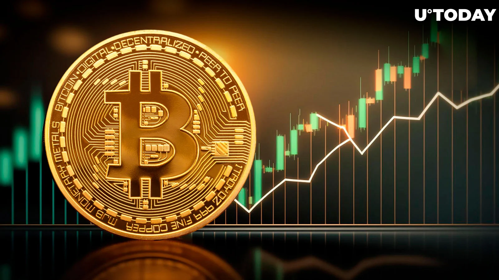
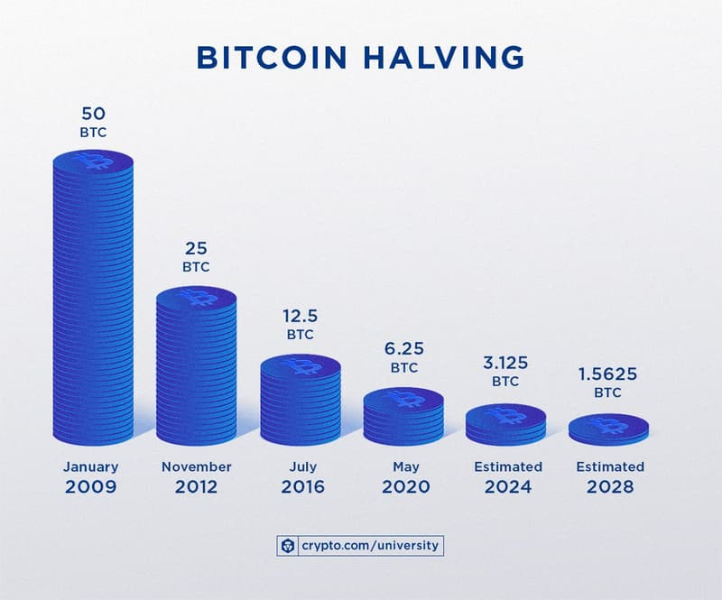
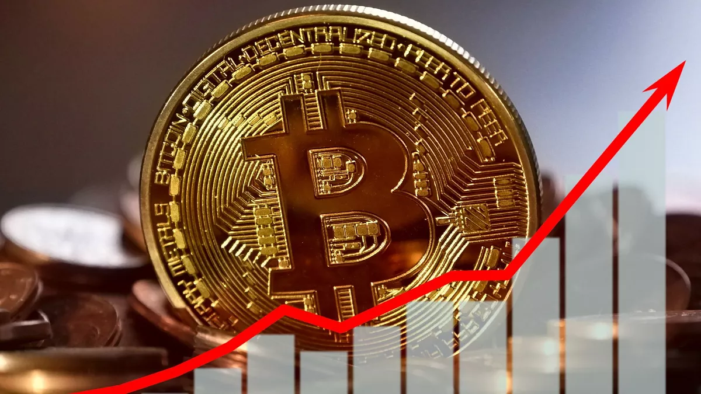

Bitcoin Halving이란 무엇이며 BTC 가격에 어떤 영향을 미칩니 까?
약 4년마다 블록당 새 비트코인의 양이 절반으로 줄어듭니다. 이로 인해 BTC 가격이 상승할 수 있습니다. 다음은 그 효과를 예측하는 방법입니다.
비트코인 반절이란 무엇입니까?
비트코인은 코드에 많은 특성이 포함되어 있으며 총 최대 공급량을 2,100만 BTC 로 할당하도록 프로그래밍되어 있습니다. 비트코인의 가장 중요한 두 가지 측면은 약 4년마다 발생하는 고정된 공급과 감소하는 블록 보상입니다. 유통되는 비트코인의 비율이 주기적으로 감소하는 것을 ‘비트코인 반감기’라고 합니다.
2012년에 보상은 블록당 25비트코인이었고 2016년에는 블록당 12.5비트코인으로 감소했습니다. 2023년 3월 현재 채굴자는 채굴된 블록당 6.25 비트코인을 보상으로 받습니다.
이 심화 기사에서 시가 총액 기준 가장 큰 암호 화폐에 대한 모든 세부 정보를 얻으십시오: 비트코인이란 무엇입니까?
비트코인 반감기는 비트코인 채굴과 어떤 상관관계가 있습니까?
210,000 블록마다 새로 발행되는 비트코인의 수는 절반으로 줄어듭니다. 이것은 블록이 얼마나 빨리 채굴되는지에 따라 대략 4년마다 변환되며 평균 약 10분입니다.
블록은 일반적으로 ASIC(Application-Specific Integrated Circuits)라는 맞춤형 컴퓨터를 포함하는 마이닝 이라는 프로세스를 통해 비트코인 블록체인에 추가됩니다. 이 컴퓨터는 컴퓨팅을 가능한 한 빨리 해시하도록 설계되었습니다.
채굴은 중앙 집중식 개체의 간섭 없이 블록체인에 트랜잭션을 영구적으로 추가하는 데 사용됩니다. 채굴자들은 리소스를 소비(채굴)하여 네트워크를 보호하도록 인센티브를 받고 이후에 비트코인으로 보상을 받습니다.
비트코인 반감기는 몇 번이나 있었습니까?
세 번의 비트코인 반감기가 있었습니다. 지금까지: 첫 번째는 2012년 11월 블록 보상이 블록당 50비트코인에서 블록당 25비트코인으로 감소했을 때 발생했습니다. 두 번째 반감기는 블록당 보상이 블록당 25비트코인에서 블록당 12.5비트코인으로 다시 감소한 2016년 7월로 거슬러 올라갑니다. 세 번째 반감기는 블록 보상이 블록당 12.5비트코인에서 블록당 6.25비트코인으로 감소한 2020년 5월에 발생했습니다.
다음 비트코인 반감기는 언제입니까?
비트코인은 개념이 생긴 이후 해시레이트가 증가하는 것을 보았습니다. 즉, 블록 시간이 이제 평균 10분 미만이 되었습니다. 이것들이 변동하기 때문에 다음 반감기의 정확한 날짜를 예측하기는 어렵습니다.
향후 반감기는 2024년에 발생할 것으로 예상 되며, 보상은 채굴된 블록당 6.25비트코인에서 3.125비트코인으로 감소할 것입니다 . 다섯 번째 반감기는 2028년에 발생할 것으로 추정되며 보상은 채굴된 블록당 1.5625 비트코인으로 반감됩니다.
반감기가 비트코인 가격에 영향을 미칩니까?
BTC 가격은 다음과 같이 반감기의 영향을 받을 수 있습니다.
궁극적으로 Bitcoin의 가격은 다양한 요인에 의해 결정됩니다. 여기에는 시장 수요 및 정서와 규제 개발이 포함됩니다. 반감기가 그 가치에 어떤 영향을 미칠지 예측하기 어렵습니다.
